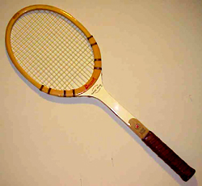
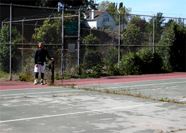
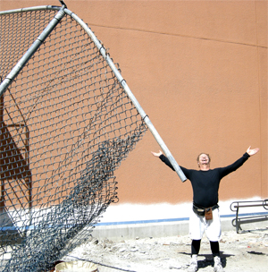
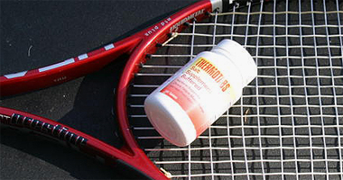
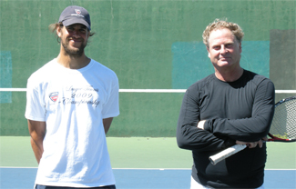
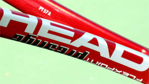
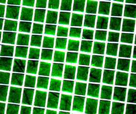
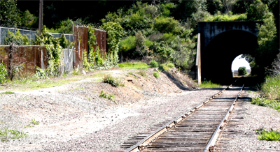

Previous: What is Open Stance | 🏠 Classic Lessons Home | (end of section)
Winning a 4.5 Tournament-After the Age of 50
By Geoff Williams
Could I actually win a 4.5 tournament over age 50. Yes but that is only part of the story.
After 20 years away from competitive tennis in Northern California, I returned to play tournaments with a goal. To win a NTRP 4.5 tournament over the age of 50.
Was that possible? Yes, but that gets ahead of the story. This story is not just about the outcome, it is about how I adapted my training, my equipment, and especially, my technical and tactical and mental play to the circumstance. It is also a stroll down memory lane that recounts how I first fell in love with tennis, where all that led, and what motivated me to come back to the battlefield in the year 2010.
Background
When I first started playing tennis, 43 years ago, I had a Bancroft wooden racquet that cost 25 cents at the Salvation Army store. (Dad had three jobs and 8 kids, no mom.) The strings were made of piano wire.
The metal strings were rusty and stunk of used engine oil. (Dad's idea to keep the strings from rusting.) I had to keep it in a wood press or it would warp. I used to sleep with it, watching it by the light of a candle with a long yellow flame.

High tech pro frames never felt as good as my old Bancroft.
I hit the wall for days on end. There were almost no practice partners in the small town I grew up in, Richmond, California, which had only two dilapidated courts. But the back of the building at the Point Richmond Plunge, a public swimming pool next to the courts, had a wall with a white net line painted onto the dark green paint. (Before the days of graffiti artists.) It also had a 20 foot tall fence surrounded by barb wire, so no one could get on the roof.
A train tunnel was right next to the courts, and the noise was deafening. This was good concentration practice. Next to the tracks there was a polly wog trench, filled with gooey lime green algae, and lots of frogs.
My friend Eddy and I, both age 8, used to amuse ourselves jumping on the trains as they rolled by at 5mph on the way into the tunnel. We'd grab the handle on the red ladders on the flatbed cars and swing ourselves up onto the train.
Eddy got his leg cut off trying to jump the train one day. Lots of blood and screaming, people panicking. Eddy was too fat to play tennis, and too fat to jump trains. His family eventually moved away and I'm not sure what ever happened to him.
I hit balls that landed on the roof of the Plunge via miss hits, as did many others. I would scamper up the 20 foot fence, jump up to the roof from on top of the barb wire, and get all the balls up there, usually 30 or more. I threw them down onto the green grass next to the train tracks. Then I jumped off the roof into the trees like a squirrel, grabbing onto any branch I could on the way down. Of course, it helped that I weighed only about 50 lbs.

One of the old Richmond courts still exists, though unplayable for years.
I am quite a ways from there now, age 54, an electrical contractor, married and living in the East Bay Hills, playing with $400 rackets custom Head rackets. But those rackets still don't feel quite as good as that warped Bancroft. The simple joy of beating your father for the first time stays with you forever, even though he let me win.
I never played junior tennis, save for one tournament, which I won, the City of Richmond open, at age 11. I beat an 18 year old, but only after I lost a match point. He made a bad call, and I teared up and bitched. He was nice enough to give me a second chance and play the point over, and I made him pay, coming back and winning the match.
I got a blue ribbon, and a brand new Jack Kramer autograph, with a diamond insert. I strung it with blue streak victor imperial gut, and it had a lot of power.
I continued to play until my twenties, when I began to play Northern California tournaments. I rose to the top three, first in the B and then the A division, analogous in today's terminology to NTRP 4.5, and 5.0. This was the late 1970s through the mid 1980s.
I did this without coaching, without junior tennis background, without high school or college competition, purely on self taught strokes, and self taught foot work.

They painted the building but the wall still exists amid the wreckage.
I used the same grip and the same side of the string bed on my groundstrokes, like Alberto Berasategui. My resistance to coaching, and lack of experience, topped me out at the 4.5 to 5.0 level. That stubborn tendency to hit the wall for days stopped me from paying for lessons. The best resource for self-improvement ever created--Tennisplayer.net--did not yet exist.
Even so, I was able to win five A tournaments. In 1986 I won 73 matches, with 17 defeats. I made the top ten in Northern California in both the A and B divisions, amassing over 30 trophies.
The most amusing memories from those days were the psychological tactics used the players. The guys who were most expert with the psyche jobs were often the guys who had the best records and the best chance of winning matches. No one had dangerous power, but many had insane consistency and frightening psychological mastery.
Some of the common psyches included:
Antelope psych: "I am jumping up and down because I am in better shape than you are and I am not a prey animal and you have no chance of winning!"
Vampire psych: Gloating and excessive fist pumping, screaming and celebrating after a hard won point or set victory. "I will suck the life out of you so you will not want to compete any longer, and force you to face the awful humiliation of my mighty celebration over your dead and stinking carcass."
Australian psych: "I must say you are serving/playing/volleying/moving/hitting well, today. I've never seen anyone hit their forehand quite that well, congratuations." This is on the changeover after the first game.
Old Man psych: "I will quick serve you just as you turn around to get ready to return. I will intentionally hit balls away from you between points. I will unnecessarily pick up balls in between serves. I will stall. My purpose is to take you into the foggy/anger zone, you young fool."
One grip, two groundstrokes.
Guilt psych: "Are you 100% sure about that call? That looked good from here." This is the first call in the first game and continues in every game thereafter.
The Insult psych: "I will call a referee before a single point is played, to make sure you know everyone thinks you are a cheater." Variation: "I didn't see the butt of the racquet, so you have to spin it again, as I think you are lying about who won the toss."
Anal Retentive psych: "Will you take your towel down off the fence? It is bothering me from 100 feet away. Will you move your bag one foot closer to the bench, as I may run into it from the other side of the net?" "Will you pick up the ball that is resting in the bottom of the net, as it's non- movingness is distracting me." "You are foot faulting by 1/2", and I will call it, 80 feet away, while still making my return."
Hacker psych: "I am going to keep the ball going, and run down all your shots and send them back so safely and risk free that you will commit suicide, you stupid blaster."
Cheater psych: "I will wait for the most opportune possible time, then call one of your shots out, when we both know it is clearly in, to drive you insane with anger." "Sorry, I had to do something, you were threatening to win."
Intimidation psych: "I will hit shots in the warm up so fast they will blow your mind. I will not hit to you, but will hit only winners to convince you I am going to win." I may bump you on the change overs. I will grunt so loudly, you will think I am Monica Seles. I will trash talk you until you cross over to my side of the net and punch me out." (I only fell for this once.)
Pretty boy psych: "I have taken lessons all my life from my tennis pro father, have the best equipment, the best form, the most power, the best string, the prettiest face, the best abs, the hottest girl friend, and the coolest car. You on the other hand are a pathetic, ugly loser. You can't afford to buy my hair spray."
Any of those sound familiar?
Injuries and Cramps
I had been bitten by the thirst for power, and paid the price in pain, thousands of days over. Injuries and a bad tendency to cramp eventually took their toll and finally stopped me from playing tournaments for 17 years, from 1987-2004.
At a given time, I might be having problems with my rotator cuff, hamstring, groin, ankle or calf. I also suffered from constant tennis elbow due to stiff frames, high string tensions, (73 lbs.), and harsh strings. I also had ten broken bones, from a variety of causes, like a brutal blue collar job, and dangerous hobbies, such as owning a motorcycle capable of very high speeds.

Thermo Tabs: finally something that helped with the cramping.
Like many "invulnerable," young and dumb guys, I made few attempts to rehab or prevent injuries. It's always easier to prevent an injury, than it is to rehab one, but I didn't know that yet….
Beyond injuries, the even bigger problem I had was a bad tendency to cramp. In the class tournaments, it was commonplace if you were winning to play two or even four matches in a 24 hour period, over one weekend. And in the summer this meant in the heat of eastern California: Stockton, Davis, Sacramento, or even, Reno, Nevada.
I tried everything to stop the cramps, and nothing worked. Bananas, Chinese cramp bark, motrin, advil, aspirin, grapes, nuts, fruit. Even if I made it through the draw the first day, it was common for me to lose 11 lbs in a single day, from a fighting weight of 172, to 161 lbs. Recovery was not ever possible for the next match.
Back in the Action
So after giving up the game for 17 years, I played a 4.5 in 2004, the San Francisco city championships. Against the #4 seed, I lost 4 and 2, in 98 degree September heat. My playing weight was now 220 lbs, from 172 lbs, stick in hand. That was enough to set me back until this year.
Delpo's forehand on Tennisplayer: inspiration.
Why did I come back again? It was inspiration. I got the bug again after gong online and visting Tennisplayer.net. I read virtually every article on the site. I studied video clips of Sampras serving. I studied Delpo's forehand. I decided to play tournaments again.
Preparation
The first step was to find good practice partners, players willing to drill and hit lots of serves and returns. The serve is the most important shot in competition. The return is number two. Consistency is the third most important aspect of competitive play.
So I tried Craigslist, and found, that of the players answering my ad for a 4.5 minimum player, 8 out of 10 guys showing were 3.5 or lower. That did not work so well. Very frustrating to have to tell the guy, "Sorry, but this is the truth: You have no serve. You have no backhand. You have no volley. You cannot hit an overhead. You have no consistency. Run along now, you puny 3.5 liar."
What I really needed was a local court scene with a hot bed of good players who wanted to work and drill and help me get back into combat shape. I tried Davies Stadium in Oakland, as there is a USTA 4.5-5.0 team there. They shunned me as if I wasn't good enough to hit with them.
I then tried Alameda's Washington Park. They only wanted to play 4.0-4.5 doubles. I heard one player complain, "Geoff hits too many winners. No one wants to play with him."
I tried the storied Berkeley Tennis Club. Strange, they wanted me to become a member. But I decided to pass on the $7,000 initiation fee and monthly dues. Beyond the cost barrier, I wasn't sure I could find three members to sponsor me, willing to hear me grunt loudly every day. It's kind of a no grunting place.

My friend and practice partner Josh Om and myself at San Pablo Park in Berkeley.
Then I tried San Pablo Park, in the Berkeley flats, a blue collar, chest thumping, trash talking, hooking kind of a place. Lots of crazies haunting the park, like Vietnamese Johnny, yelling, "Do something! Hit like a man! My money is on that team." He carries a pint of whiskey in his dark green army fatigue jacket. He said to me, "You got a good volley!"
So, I finally found a spot where guys wanted to drill and improve, such as Josh Om, and Freedom Om, and even their patriarch, the original Om, who walks around dressed in prison orange with small red flowers tied to the top of his tennis shoes, guru style. He hits a nice ball even at 70 years old and teaches everyone to play with both hands.
This was my kind of group. The orange shirt gang, with ambidextrous serves and forehands, players not afraid of serve/returning for two straight hours! The type of guys who can hit to targets for 800 straight shots. Just what I needed to hone my game back into combat shape.
Fitness
I also had to admit the days were long past--20 years and 50 pounds past-- when I notched wins over some of the best 5.0 and even Open level players using speed and fighting spirit.
I'm in my 50s, now, and I refuse stop eating good food, drinking good wine, and good sake. This means I can't (or at least won't) go below 220 lbs. It's like carrying a 50 lb. back pack into the Iraqi desert, and trying to run down speedy little insurgents who are gunning for you. The insurgents are not carrying 50 lb. packs. (They also aren't drinking too much wine or eating too well.) They carry AK47 and replacement mag clips.
Speed kills but so does blubber, and I was not fast anymore. Watching my matches now is kind of like watching a gray whale trying to catch up to and beat up on a dolphin.
I take things to keep on going, such as fish oil, Juvenon, acetyl carnitine, vitamin D, cla, green tea, alpha lipoic acid, quinine (some are allergic) also stops cramps, and even golden pickle juice. (Click Here.)
I tried fluid recovery powder. (Click Here). I also found that chocolate milk, has the same portions of carbohydrate/protein 4/1 that a lot of the expensive drinks have, as a recovery drink, but it's a lot cheaper.
Injuries
It's always easier to prevent one than to heal one. So, I stretch, putting my legs and lower back into extreme flexion, in the evening, like Federer does. I bend over and I tense my abdomen, near the navel, and then the perineum, alternatively, to "shove" and then to "suck" energy towards the injuries.
My own brand of chi energy channeling. I bring my blood pressure sky high, and then release. It can also clear you of match tension to swing freely again. I also use ice and heat on muscle pulls.
Equipment
I also had to switch from Babolat frames to the Head PT57A, which is a stick available only to top pros and juniors. You can find it on the various internet message boards, since it no longer easily accessible from Head.

See the magic identification code on the frame? That's PT57A.
Soderling, Glubis, and Wawrinka, are examples of pro players that use the PT57A, either that or the E version which is slightly stiffer. Very flexy, and it allowed me to practice harder and longer, without the injuries caused by stiff sticks.
I leaded them up from 320g to 360g for more plow through. Whenever I tried that with the Babs, I got huge arm/shoulder/elbow pain. I also gave up on Luxilon big banger original rough, a piano wire like string, reminiscent of my original racquet's string--actual piano wire. After trying many hundreds of hybrids, and strings, I switched to Global Gut, $10/set, hybrid with Alu Power Lux.
Tricked out this way, the sticks feel like a soft piece of taffy, compared to the stock version of the micro gel mid plus, which feels like a frozen solid piece of taffy. There is less string breakage due to the flexy nature, and increased confidence at high swing speed.
I learned to use New Balance shoes, due to the fact they are the only shoe that fits my Neanderthal 4E flat foot. Thorlo tennis socks, doubled up, to provide more cushion on the oft injured foot pads, and a super powered running shoe insert. Sunscreen up to 55 spf, as I've already had skin cancer on my face. I also use a large towel, which I keep on the back fence, to take time in between points, and recover, and wipe off blinding sweat. (Bugs the crap out of the young dumb guys who want to rush you.)

Global Gut in a hybrid with Alu Power Lux, glowing in the spring light.
Tactics
Most of the 4.5 guys, develop consistency as their main weapon. They may be able to hit a few forehands topspin winners, or a few aces, or knock off a volley here and there, but most don't have the power to approach and blast off both sides. Speed and consistency wins the tournaments.
But with my speed gone, and my long history of injuries, my tactics now revolve around ending the points more quickly. I needed to be able to end points with my forehand and backhand.
I needed to learn how to hit a good serve, and good second serve. The top pros all have one thing in common: they are only as good as their second serve. The top players all have similar % of winning points on the second serve. This is where my study of Sampras on Tennisplayer paid off.
I also needed to end some points at the net, before the grinders wore me down completely. So, I started to serve/volley for hours at a time, to make it natural to hit volleys low and away or deep and away, or drop it, or punch it.
Studying Sampras was the key to improving my second serve.
I also needed to be able to probe and hunt for weaknesses, in people's games. Everybody has some. So I learned to change my serve position on the line, hunting for a weak return. Sometimes I hit the slice wide to the forehand in the deuce court. Sometimes it's the twist to the backhand in the ad side. I change the pace and spin and placements not only of my serve but also my ground game.
I also changed my return position around, and hit a lot of returns from these positions in practice, to make them second nature. The last thing I want to do is hit 35 shot rallies, and run all day, playing two matches a day, carrying 50 lbs. of extra weight.
Loss of Condition
It's not a secret that it's harder to lose and maintain weight when you get older. My biggest problem was being unwilling to stop eating well and drinking well. My one pleasure in life--eating like a medieval king. (And I never use a fork.)
My history of cramping was an even bigger problem. Over the years I tried lots of things to stop the cramps. I finally found Thermotabs, a buffered salt/potassium/chloride pill, on the Tennis Warehouse message board. Works wonders to stop the cramps. Fluid recovery powder also helps, and I mix these all together and drink it in matches.
I also had to face the problem of two matches a day. This should be illegal. I believe it causes lots of overuse injuries. Directors have only so much time/schedule/courts and usually are forced to do this.
More winning volleys at the net, before the grinders could wear me down.
My personal experience, after two matches in day is that my body is pulverized, with horrible cramping, sore muscles, ripping and searing physical pain. I move too fast, try too hard, pump too much blood, for my own good. But until a lawyer or two gets hurt playing, and they gang up on the directors en masse, nothing will change. Any wimpy lawyers out there, who hate playing two a day? Call me up. I'm ready for a class action suit. "It's all your fault, you damn tournament director. You made me enter this damn thing."
Then there is the nasty summer heat. Burn the skin off your forehead heat. Burn your feet heat. Skin cancer heat. Horrible cramping heat. So I don't play the tournaments anymore that are too far away from the California coast where it can be 20 degrees cooler than inland. Otherwise, I come back looking like a fat faced lobster, ready for the pot. I have to rub off the sweat, and off with it comes the sun’s cream.
And then, finally, there are the sandbaggers. These are the guys who aren't really 4.5 level, but are playing for easy matches and trophies. How do you deal with a guy playing down? The truth is many guys who win tournaments are playing down. You are going to run into them sooner or later.
On To that 4.5 Victory
I entered my first 4.5 tournament since 2004, in Carmel, at the beautiful Carmel Valley Athletic Club. I played my first match against a member there, who choked, and I tuned him up 1 and 0. Put away lots of volleys.
Next match was the same day, a tall guy who served and volleyed the whole time, no matter how many returns went sailing past him. He hit a lot of aces, so what? Tuned him up 1 and 3.
I drove back up to Oakland, due to no money to pay for a hotel, and ended up driving 8 hrs total in two days. Went back the next day and won again, playing three matches in 24 hours.
In the final I jumped on short backhands.
In the final I played the guy who won the tourney last year, in front of his home crowd. After driving for another 2 hours to get there, I had ten minutes to warm up and got broken in the first game. I broke back, held and broke again for 3-1 lead, but got broken right back again.
The first set went to a tie breaker, where I went up 3-0, and promptly lost the tie break 7-5. I could not decide which stick to use, and lost confidence in the breaker, using three sticks.
Then I quickly went down love 3 in the second set, and told myself, "You are going to come back. This will be a glorious come back. Hit better serves, hit better returns, move faster." I went to super fast feet mode, and fire in the eyes on the return.
I broke back. Held. Broke again, Held, and Held again for a 6--4 set. The guy said, "Shit. Now it's split." I asked for new balls, and the director was nice enough to give us three new ones.
I took a bathroom break, came out and immediately broke. Got broken back. Broke back. Got broken back. I pulled out a 15-40 game at 4 all, and then closed out the match, at love, by looping it high to his backhand, and using that shot as an approach shot. The guy cracked badly in the third, due I think to the pressure I had put on his serve.
A critical adjustment--looping deep to the backhand.
But I also made several adjustments. He had been chipping at my ankles, short to my forehand, and I was getting lobbed to death, hitting lobs that landed within a foot of the baseline. So I stopped hitting kickers to his backhand and started serving down the middle to his forehand, which turned the match around.
He began to miss, and to hit short to my backhand. I jumped on those returns down the line, approached or hit winners. I made better returns, knocking him off the net.
This is what allowed me to work the high looper to his backhand. It made him back too far off the line, caused some outright errors and allowed me more room to volley. He banged his racket on the back fence and screamed out in frustration. The match was over when he did that. It gave me the confidence to close him out.
But the real turning point had been when I was love three down in the second, and decided that I was going to come back, intended to come back, and imagined how good that would feel in the end. I visualized the director handing me the trophy, and smiling, and shaking my hand. I had forgotten how hard it was to win, even at this level, against a smart and determined opponent.
Post Script

40 years later the tunnel by the courts is just the same.
In the end, haven't we all felt a little like fat Eddy, stumbling along on the oil stained gravel bed by the old railroad tracks near the tunnel with the creosote covered ties, our pudgy dominant hand clutching the red ladder, clutching victory? Only to feel our dominant hand slipping, our legs rotating under the weight of defeat? A little bit of self belief, cut away with each loss.
The train rolled over his right leg. Blood soaked blue jeans. Eddy's leg hung by a sliver. My stomach turned nauseous; the blood rushed out of my head; the world went dark. I stumbled off to the right side of the gravel bed and collapsed next to the tennis courts. Tears. My hand did not slip on the red ladder.
 |
Geoff Williams grew up playing tennis in his hometown of Richmond, California, winning his first and only junior tournament at age 11. Over the years he went on to become a fixture on the Northern California NTRP tournament scene, winning numerous titles at both the 4.5 and 5.0 levels. He accomplished this with a self-taught style, shunning lessons. His recent return to glory was inspired in part by his intensive study of Tennisplayer.net. He claims with a straight face to have read literally every article on the site. An electrical contractor by profession, Geoff lives in the East Bay with his wife Ronda. Want to swap stories with Geoff or talk Gear Head talk? Email him: bestelectrician@sbcglobal.net |
Previous: What is Open Stance | 🏠 Classic Lessons Home | (end of section)